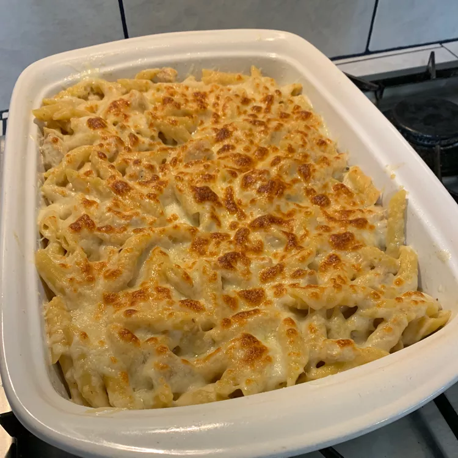

Baked Cheesy Chicken Alfredo Pasta

A Creamy Baked Alfredo
Chicken and penne pasta simmer together in a garlicky, creamy broth, and are quickly baked between cheesy layers of Parmesan and mozzarella. Top with fresh parsley as desired.
Ingredients
- 1 tablespoon olive oil
- 3 skinless, boneless chicken breast halves, cubed
- salt and ground black pepper to taste
- 4 garlic cloves, minced
- 2 1/2 cups chicken broth
- 2 1/2 cups heavy whipping cream
- 1(16 oz) package penne pasta
- 2 cups grated Parmesan cheese
- 2 cups shredded mozzarella cheese
Steps
- Heat oil in a skillet over medium heat. Add chicken, salt, and pepper; cook and stir until golden brown, about 5 minutes. Add garlic; cook until fragrant, about 2 minutes. Add broth and heavy cream; stir in pasta and bring to a boil. Reduce heat and simmer until pasta is tender, about 15 minutes.
- Set oven rack about 6 inches from the heat source and preheat the oven's broiler. Grease an 11x17-inch baking pan.
- Pour 1/2 the pasta mixture into the prepared pan. Sprinkle 1/2 the Parmesan cheese and 1/2 the mozzarella cheese over the pasta. Layer remaining pasta on top; finish with remaining Parmesan and mozzarella cheeses.
- Broil in the preheated oven until cheese is golden brown, 10 to 15 minutes.